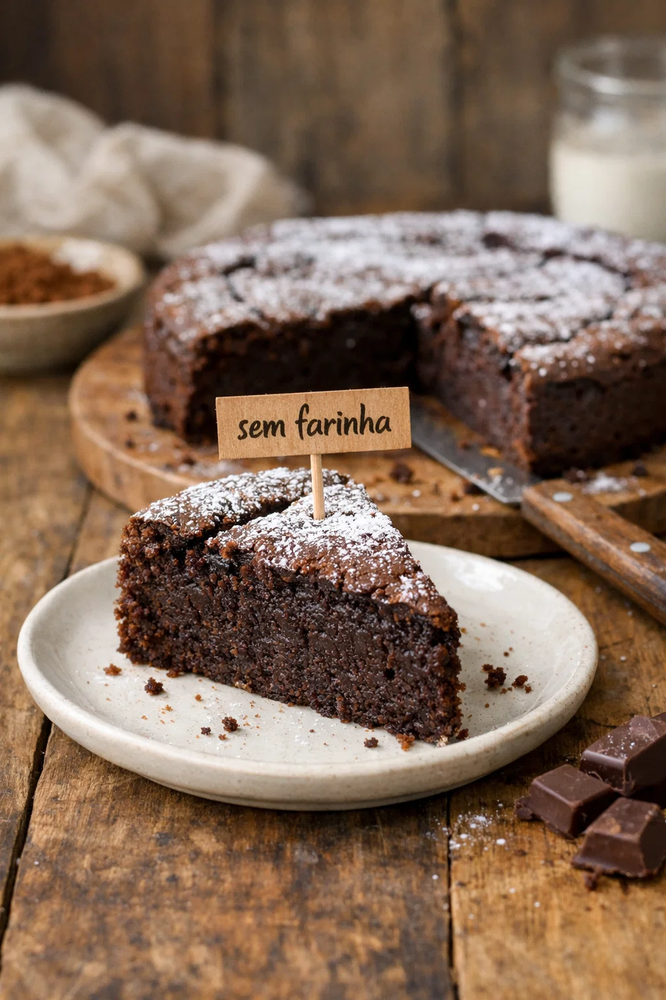

Doces · Tortas e bolos
Bolo de chocolate com 3 ingredientes

Ingredientes
- 450 g de chocolate ao leite ou meio amargo
- 230 g de manteiga sem sal
- 8 ovos
- Açúcar de confeiteiro para untar e decorar
Modo de preparo
- Derreta o chocolate com a manteiga no micro-ondas (1 min, mexa, mais 1 min) até homogêneo. Deixe esfriar.
- Bata os ovos na batedeira por 5–8 min até dobrar de volume.
- Incorpore o chocolate em três etapas, mexendo de baixo para cima.
- Despeje numa forma desmontável untada com manteiga e açúcar. Asse em banho-maria a 200 °C por 40 min.
- Decore com açúcar de confeiteiro.
Observação
Receita da chef Heaven Delhaye (link do X/Twitter). Sem farinha.